Bash源码分析
周荣华
作者简介：10年通讯底层研发经验，熟悉linux/vxworks等实时操作系统的内核原理和实现，在虚拟化的openstack，kubernetes，docker等领域也初有涉猎。
摘要：本文讲述当下留下的linux的bash的源代码，通过代码分析和单步调试解析bash的运行流程，适合喜欢研究linux原理的高级用户。分析的源代码来自gnu的开源项目https://git.savannah.gnu.org/git/bash.git，例子是作者自己编写，可以随意引用。
1 引言
Bash这个程序作为一个linux的用户，用的实在太频繁了，但一般局限于会用就结束了，一直没机会研究bash本身的原理。因工作需要，调试一个bash的cpu冲高问题，趁此机会对bash的源码做了一些研究，希望能对大家有点帮助。
2 linux的各种主流shell介绍
现在一般使用的shell有sh，bash和csh这几种，我们这里主要说的是bash，其他shell的源代码逻辑也差不多。
3 bash使用到的主要数据结构介绍
3.1 COMMAND
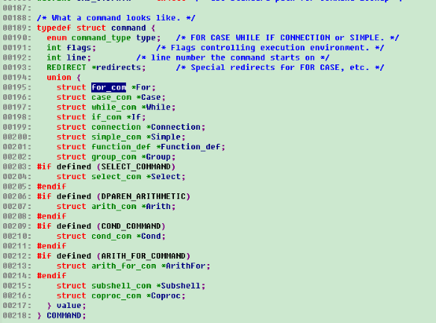
COMMAND是所有数据结构的纲，从这里可以看出一个bash实际能执行的语句有14种，分别位for，case，while，fi，connection，simple_com，function，group，select，arith，cond，arith_for，subshell，coproc，其中select，arith，cond，arith_for这4个命令需要打开对应的编译开关之后才能执行。
除了下面的这个union外，另外几个属性分别对应命令类型，行号和执行环境控制参数。其中控制参数有很多，每个控制参数占用一个bit位，包括是否启动子shell，是否忽略exit值等。
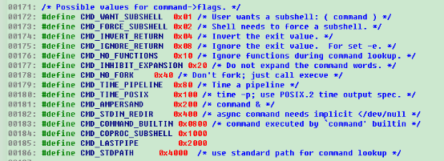
这些flag可以在bash启动shell脚本时设置，或者在shell脚本内部调用set指令来设置，一般用户不怎么关注，高阶用户可以看看：

3.2 FOR_COM
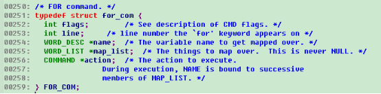
FOR_COM对应的shell语句是for name in map_list; do action; done
从结构体定义可以看出，除了和COMMAND相同的flags和行号外，for语句是有一个变量名，一个列表和一个递归的COMMAND组成的，实际for循环执行过程中也是将列表中的每个元素拿出来赋值给变量名，并执行action中的脚本段。
从这里的flags，可以看出，每条命令的flags是可以单独设置的，本条命令设置的控制参数可以不影响其他命令的控制参数。
3.3 CASE_COM
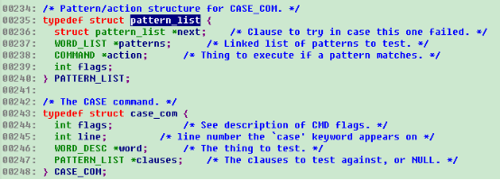
对照下面的脚本，可以看出，先判断一个变量，变量判断晚走到复合语句clauses，注意clause最终实现的时候是一个单向链表，链表中每个元素由一个样式的列表和一个执行体action来组成。
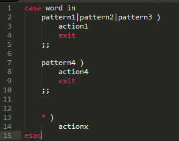
3.4 WHILE_COM
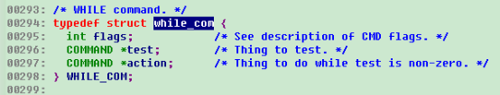
WHILE_COM比较简单，主体有两部分组成，判断条件和执行体。上篇文章调试过程中导致CPU冲高到100%的例子就是用的WHILE_COM，不过例子中的WHILE_COM的判断条件留空，相当于永远为true。

3.5 IF_COM
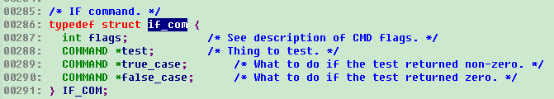
IF_COM由3段组成，条件判断，条件为true时的执行体和条件为false时的执行体，其中false情况下的执行体可以为空。
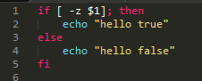
从IF_COM的定义看，3部分都可以是复杂的COMMAND结构，所以嵌套起来也可以做的非常复杂，例如可以在test部分通过执行脚本，依靠脚本的返回值来判断是应该执行true_case还是false_case。
3.6 CONNECTION
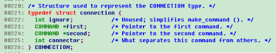
CONNECTION由4个属性组成：ignore字段对应其他命令结构种的flags，但对连接命令实际上没有用first对应第一条命令，second对应第二条命令，connector对应两条命令之间的连接符。难道只能两个命令一起用，不能多余两个命令一起调用？显然不是，一个CONNECTION对应一个连接符连接起来的两段命令，每段命令又可以是一个CONNECTION，这样就形成了级联的效果。
CONNECTION有3种：AND_AND对应“&&”，表示first执行返回结果为0的时候执行second；OR_OR对应“||”，表示first执行返回结果为非0的时候执行second；分号对应的connector还是分号，表示无论first执行结果是0还是非0，都执行second。是不是有点像C语言里面的&&，||和;？
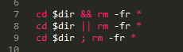
上面的三个例子别真的执行，后果很严重(J)。第一条表示删除$dir对应值的目录中的所有文件；第二条表示$dir不存在的时候删除当前目录下面的所有文件；第三条表示，如果$dir存在就删除$dir目录下的所有文件，如果不存在就删除当前目录下面的所有文件。
3.7 SIMPLE_COM
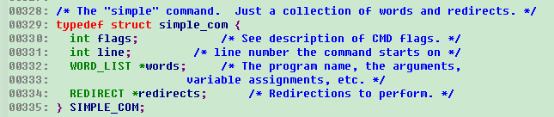
SIMPLE_COM按字面意思就是简单命令，结构体由四部分组成，通用的flags，行号line，命令队列WORD_LIST，重定向队列REDIRECT。
WORD_LIST队列比较容易理解。一堆命令的集合：
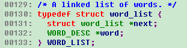
其中单个命令还可以独立设置flags：
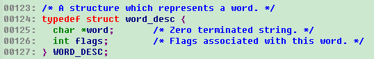
REDIRECT就是重定向的意思，这里也有很多种重定向，结构体的各个属性的含义：next，组成重定向链表的指针；redirector，重定向的源；rflags，重定向时使用的私有flags；flags，打开重定向目标文件时的flags；instruction，重定向的实际功能指令，这个又有很多种，下面会详细描述；redirectee，重定向的目的文件描述符或者文件名；here_doc_eof，本地文件。
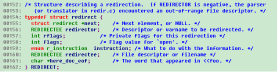
从REDIRECTEE的定义看，它既可以是一个文件描述符，例如0表示标准输入，1表示标准输出，2表示错误输出，也可以是一个文件名。
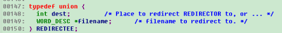
Bash支持二十种不同的重定向，后面会根据bash的源代码来一一解释一下具体内容（bash源代码的注释对重定向的含义理解也有很多帮助）：
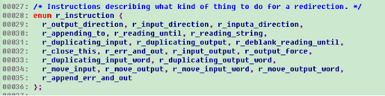
先来五种输出的重定向：普通输出，强制输出，错误和标准输出，叠加输出，错误和标准叠加输出。统一说一下几个概念，标准输出就是2级stdout，错误输出就是3级sdterr，强制的意思是文件存在的情况下会被先清空，再增加，叠加输出的意思是原有内容后面再增加。
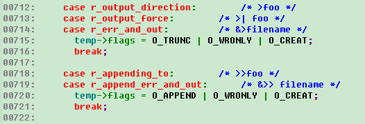
再来九种输入和输出重定向：普通输入重定向，后台执行，输入和输出同时重定向，去掉空格的输入重定向，输入重定向，字符串作为输入，关闭重定向源（怎么还有这种应用场景？），复制输入，复制输出。
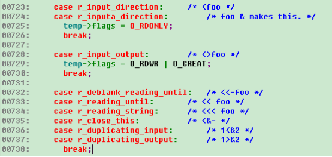
紧接着六种输入输出的重定向分别为输入剪切，输出剪切，字符指向的输入剪切和字符指向的输出剪切，字符指向的输入复制和字符指向的输出复制。
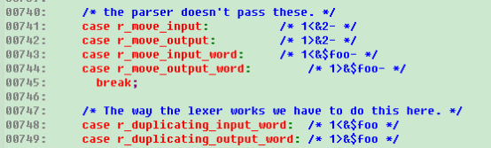
Bash的重定向真是博大精深！！明天继续其他COMMAND的定义讲解。
3.8 FUNCTION_DEF
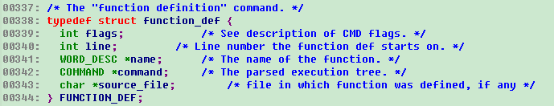
FUNCTION_DEF由五部分组成，通用flags，起始行号，函数名，解析之后的函数执行体，如果函数定义在文件中，最后会有文件名。函数的定义也可以有入参，入参的提取和文件执行时类似的，都是走$1,$2类似的形式获得的。
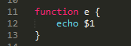
3.9 GROUP_COM
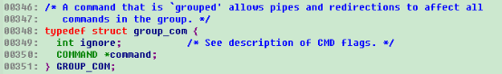
GROUP_COM是个什么鬼？通过分析group的处理函数，发现group原来就是多个命令组成的命令段，一般用{}包围起来，从group_command_nesting变量的变化看，group是支持多层嵌套的。
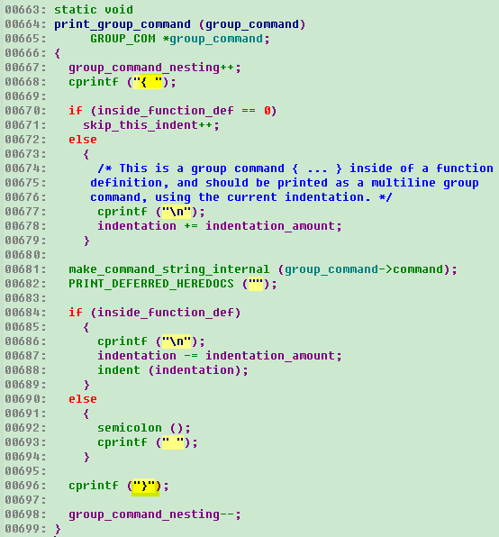
3.10 SELECT_COM
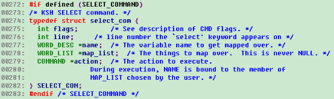
SELECT_COM并不是每个版本的bash都存在，可以通过在bash里面敲help来确定其是否存在。下面这个bash 4.2.46的版本中是打开了select的开关的：

SELECT_COM的作用是为了生成一个简单的菜单，用户通过选择菜单来让系统执行对应的命令，常见的SELECT_COM是时区配置时使用的。

具体分析/usr/bin/tzselect源码时发现，为了做到各个shell之间的兼容，这个脚本写的比想象中要复杂的多。
首先要是一下版本号的记录：
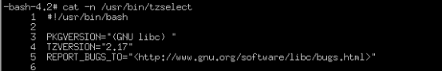
跳过紧接着的注释，然后是版本兼容性判断，使用帮助：

然后很无聊的定义了一个完全不用的变量IFS，但用来定义IFS的newline后面倒是用过。
为了规避bug，还要把PS3清空。

终于进正题了，先选择大洲或者大洋：

根据大洲或者大洋，通过awk汇总对应的国家列表：

二级select，选择国家：

再次祭出awk，通过国家汇总时区列表：
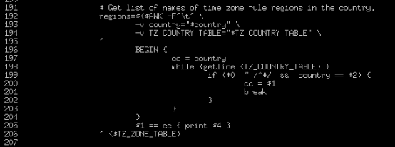
第三重select，选择时区：
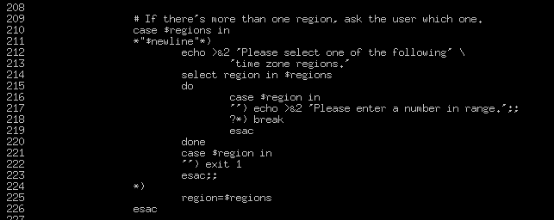
计算好时区之后，出现第四重select，确认是否要修改：

还要判断一下当前是cshell还是其他shell，指导用户将当前的时区改到shell的启动脚本里面去（老大你写了这么多代码，不能自动把这句加进去么？还是要手动加L）。

3.11 ARITH_COM
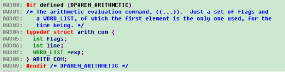
ARITH_COM也是需要开关打开的，不过当前默认用的bash都是支持的，这个命令的意思是算术表达式，算术表达式要用(())包起来，要不然bash会不知道你想当做算术表达式使用，如果执行“echo 1+1”会怎么样？bash认为它是一个文本，直接将文本本身显示出来了J。

加上(())之后echo还是失败的：

再加一个$之后终于正常了：
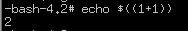
实际操作的时候，发现[]包起来的算术表达式也能用，但不加$的时候不会报错，加了会触发求值：

通过查看代码，发现，只有(())是算术表达式：

而[]只是为了兼容posix.2d9的一种算术替换规则，也就是说$[1+1]是直接替换成了2，而(())还需要走到算术表达式求值过程（是不是有点饶J）。

3.12 COND_COM
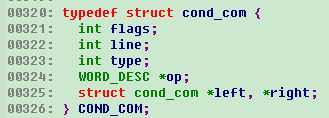
COND_COM由六个属性组成，通用的flags和line。Type有6种，分别是与、或、一元、二元、最小单元、表达式。这样分类起始让人有点疑惑，其实所有表达式只有一元、二元、三元等等参数个数的区分，bash源代码为了yacc解析方便，把其中的与表达式、或表达式、不带任何表达式的变量或者常量和其他表达式区分开来识别。
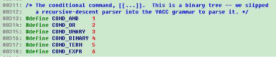
条件命令使用的一元表达式有26个，区分大小写（真的很多，居然只用了一半，没有把26*2=52个字母全部用光，设计这个的老大还真是拼啊），下面简单过一下。
a/e判断文件是否存在；r/w/x判断文件是否可读或者可写或者可执行；o表示当前用户是否拥有该文件；G表示当前用户的组是否拥有该文件；N表示文件存在而且有新内容（从你上次读，文件被修改过）；f表示常规文件（设备文件返回false）。

d表示目录，s表示文件大小大于0，S表示socket，c表示是字符设备，b表示块设备，p表示有名管道，L/h表示符号链接：
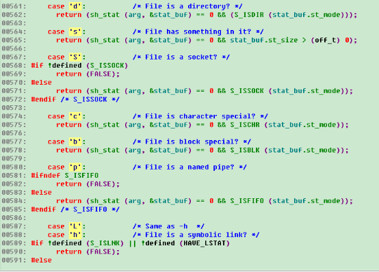
u表示文件被设置了uid，g表示设置了组id，k表示sticky文件（对目录表示任何人都可以在该目录创建文件，但只能删除自己创建的文件，对可执行程序表示程序执行结束之后还会在内存待一阵子，方便下次再次执行的时候，不用从硬盘读到内存里面），t表示终端。
n表示脚本执行时存在至少一个参数，z表示没有带任何参数，o表示arg选项设置了，v表示变量存在。最后还有一个R，表示是否在命名表里面有索引。

二元表达式比一元表达式少了不少，总共
=，>=，<=，>，<，!=，这六个望文生义就知道什么意思了。
另外四个其他语言也经常会见到：-nt（newer than，表示文件修改时间更新），-ot（older than，表示文件修改时间更老），-lt（less than，更小），-gt（greater than，更大）。

还有五个：-ef（equal file，同一文件，不只是文件内容完全一样，而且需要文件指向的inode节点也完全一样），-eq（equal，算术相等），-ne（not equal，算术不相等），-ge（greater or equal，算术大于等于），-le（算术小于等于）。上面的算术计算，对字符串也试用。

3.13 ARITH_FOR_COM

ARITH_FOR_COM有点像C语言里面的for循环，几个属性中有初始化，测试边界命令，步进命令和实际的执行体。除了算术运算要求的两层小括号和do，done关键字，完整代码和C语言里面的for是不是没啥明显差别？J
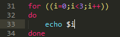
3.14 SUBSHELL_COM

SUBSHELL_COM的结构体定义比较简单，就是一个命令属性，看来关键的复杂度还是在写shell脚本本身上J，不过对bash本身而言，就是把脚本文件读进来，后面一行一行执行的时候，和其他普通命令没有差别。
3.15 COPROC_COM
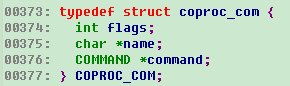
COPROC_COM的全称是coprocess，翻译成中文应该是协程的意思，不过shell里面的协程没有像高级语言那么复杂，对bash而言，执行结果和执行命令后面加一个&类似，不过可以制定协程的名字。
4 bash源代码的目录结构
现在才说源代码的目录结构是不是晚了点J。
前面分析数据结构的时候，基本上把每个命令的执行过程也简单过了一下，这样大家读代码的时候先有一个概貌，不至于一叶障目不见泰山。
用tree命令打印出来的目录结构如下，其中builtins目录里面是大多数内置命令（例如cd，pwd等）的实现，但没有看到ls命令，难道部分复杂命令还另外建了git库来实现？
Cross-build是交叉编译的设置。CWRU是修改记录，很多人在修改记录里面还留了自己的邮箱，有兴趣的读者是否可以和他们聊聊J。Doc是文档目录，包括html格式的和pdf格式的文档。Examples目录是各种脚本的例子，不知道怎么写复杂bash的读者有福了。Include目录里面是一些实现bash过程中经查会用到的一些结构体或者宏的定义，一般都是写和bash不直接联系的，直接要用到的定义都在最顶级目录下面。
Lib是实现bash种要用到的各种公共库，这些库的实现本身和bash的解析没有直接关系，统一放在lib目录。
M4是GUN的一种编程语言，类似宏，m4目录下面是用m4语言写的timespec结构体的定义相关头文件校验和时间统计相关的头文件校验宏。
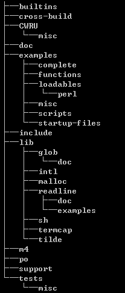
Po又是GNU的一种编程语言，字面意思是可扩展组件，bash主要用它来实现多语种的扩展，每个语种都有自己的一个po文件，分别负责将代码里面的打印字符串转换成对应的语言。例如zh_CN.po里面定义了中文的各种字符串：
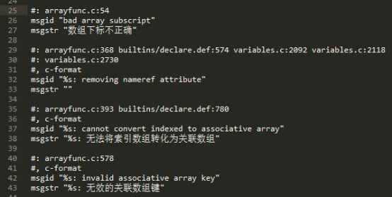
Support目录负责bash的手册html页面的生成。
Tests是很多自测用例。
最重要的代码都放在最突出的位置，顶级目录下面有44个c文件，其中最重要的有四个：shell.c，脚本的解析；make_cmd.c，命令生成；execute_cmd.c，命令执行；copy_cmd.c命令拷贝。前面对语法的具体用法代码多数都来自execute_cmd.c文件。
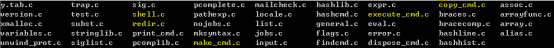
redir.c主要是各种重定向的定义和执行，前面讲到SIMPLE_COM的时候，曾经详细讲解过。
subst.c主要是对[]表达式的值替换。值得一提的是，这里对$开头的变量做了完整的说明。首先$0到$9分别对应脚本文件名，第一个入参，…，第九个入参。

$$执行shell的pid；$#执行脚本时传入的参数总数；$?上一次同步命令的执行结果，同步命令的意思是这个命令不执行完，就无法继续下面的执行，如果命令执行的过程中加了&，那$?无法得到其执行结果；$-脚本执行时的flags；$!，和$?相对，$!指的是上一个异步命令执行的结果。
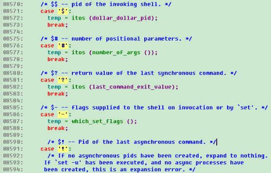
$*和$@都是打印出剩余所有参数，按代码的说法，$*和$@的差别就是是否将带引号的参数去掉引号，实测结果打印出来的结果似乎是一样的。
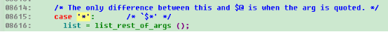
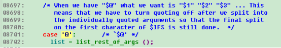
实测效果：

5 bash脚本的执行过程分析
一个环境上多个sh的cpu占用达到99%，但实际通过ps看，这个sh并没有带任何参数，如果想要知道这个sh在干什么活，为何会一直冲高，还是gdb调试一下比较靠谱（还有一种可选的方法是不断的敲 cat /proc/*/stack 来反复查看堆栈，多敲敲之后总能抓到几次上下文，其中*换成对应进程的pid）。
通过下面的调试，可以看到当前执行是一个简单命令(cm_simple)，通过p *command-＞value-＞Simple-＞words-＞word 看到当前执行的简单命令在字符串是true。
Breakpoint 1, execute_command (command=0x10946f0) at execute_cmd.c:386
386 result = execute_command_internal (command, 0, NO_PIPE, NO_PIPE, bitmap);
(gdb) p *command
$9 = {type = cm_simple, flags = 8, line = 0, redirects = 0x0, value = {For = 0x1094760, Case = 0x1094760, While = 0x1094760,
If = 0x1094760, Connection = 0x1094760, Simple = 0x1094760, Function_def = 0x1094760, Group = 0x1094760, Select = 0x1094760,
Arith = 0x1094760, Cond = 0x1094760, ArithFor = 0x1094760, Subshell = 0x1094760, Coproc = 0x1094760}}
(gdb) p *command-＞value-＞Simple
$10 = {flags = 8, line = 3, words = 0x1094740, redirects = 0x0}
(gdb) p *command-＞value-＞Simple-＞words-＞word
$11 = {word = 0x10946d0 "true", flags = 0}
(gdb) c
Continuing.
重新运行，可以看到又跑到了一个简单命令，其命令是"i=i+1"（汗）。
Breakpoint 1, execute_command (command=0x10947b0) at execute_cmd.c:386
386 result = execute_command_internal (command, 0, NO_PIPE, NO_PIPE, bitmap);
(gdb) p *command
$12 = {type = cm_simple, flags = 0, line = 0, redirects = 0x0, value = {For = 0x1094ad0, Case = 0x1094ad0, While = 0x1094ad0,
If = 0x1094ad0, Connection = 0x1094ad0, Simple = 0x1094ad0, Function_def = 0x1094ad0, Group = 0x1094ad0, Select = 0x1094ad0,
Arith = 0x1094ad0, Cond = 0x1094ad0, ArithFor = 0x1094ad0, Subshell = 0x1094ad0, Coproc = 0x1094ad0}}
(gdb) p *command-＞value-＞Simple-＞words-＞word
$13 = {word = 0x1094ab0 "i=i+1", flags = 20}
(gdb) c
Continuing.
通过shell的进程号，查询进程的上下文，发现是从另外一个虚机链接过来的ssh，咨询环境负责人，该虚机是跑测试用例的，之前跑的测试用例不知道为何没有正常停止，测试用例确实就是简单的一行命令：
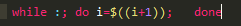
cat /proc/27538/environ
XDG_SESSION_ID=24620SHELL=/bin/bashSSH_CLIENT=192.168.9.13 45494 22USER=rootPATH=/usr/local/sbin:/usr/local/bin:/usr/sbin:/usr/binMAIL=/var/mail/rootPWD=/rootHOME=/rootSHLVL=2LOGNAME=rootSSH_CONNECTION=192.168.9.13 45494 192.168.9.196 22XDG_RUNTIME_DIR=/run/user/0_=/bin/sh-bash-4.2#
6 结束语
Bash的源码解析到这里就结束了，更详细的内容，需要各位读者在实际使用时一一对应bash的源代码来得到更详细的解读，源码都来自于GNU的社区：https://git.savannah.gnu.org/git/bash.git，欢迎感兴趣的同事一起讨论分析。